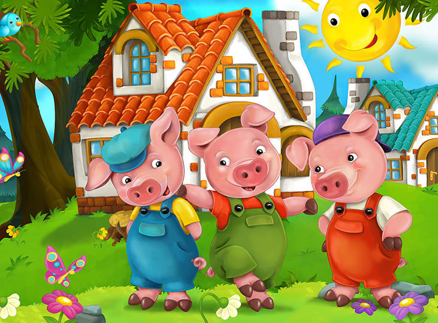
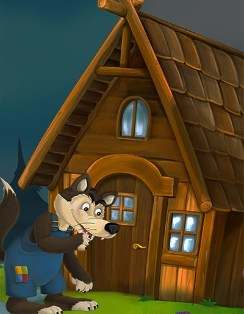
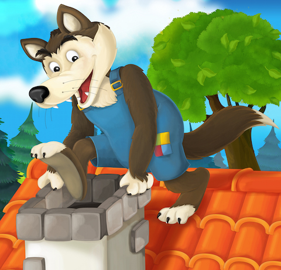
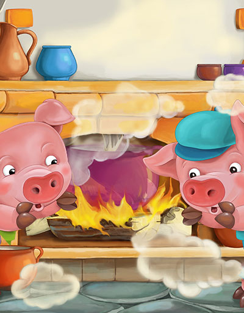
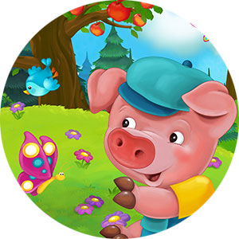

Once upon a time, there were three little pigs who set out to build their own houses. The first pig built his house out of straw because it was the easiest material to work with. The second pig built his house out of sticks, thinking it would be a bit stronger than straw. The third pig, who was the wisest, decided to build his house out of bricks, which took more time and effort but made it very strong.

One day, a big bad wolf came along. He saw the straw house and wanted to eat the little pig inside. "Little pig, little pig, let me in!" he said. But the pig refused, so the wolf huffed and puffed and blew the house down. The frightened little pig ran to his brother's house made of sticks. The wolf followed and blew that house down too, after the pigs refused to let him in.

The two pigs then ran to their brother's brick house for safety. The wolf tried to blow the brick house down, but no matter how hard he huffed and puffed, the house stood firm. The wolf grew frustrated and decided to climb down the chimney to get inside the house.

However, the third pig was clever and had a pot of boiling water waiting in the fireplace. When the wolf came down the chimney, he fell right into the pot and ran away, never to be seen again. The three little pigs lived happily ever after in the strong brick house.

The End!